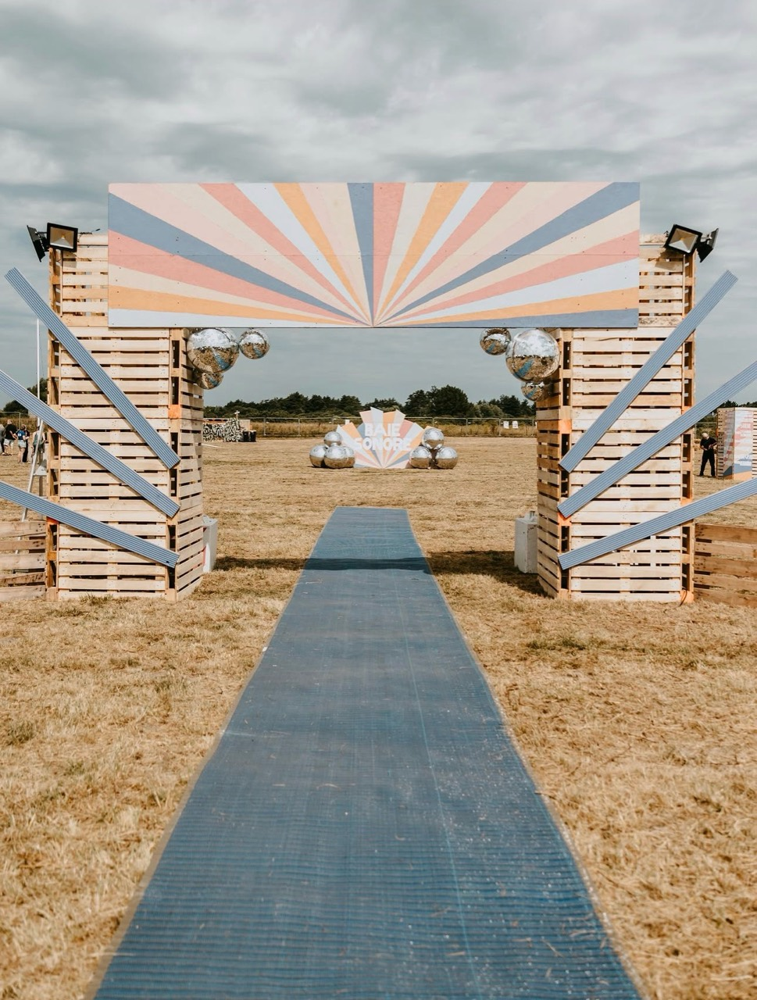

Montage / démontage
Mise en place et rangement du festival, installation des espaces, manutention, signalétique et mobilier.

En partenariat avec Baie Sonore
Montage, bar, billetterie, VIP, parking, merchandising, accueil artistes...
Contreparties bénévoles
Pass festival + 1 repas pour chaque shift de 5 heures, avec softs à dispo et -50% sur l'alcool.Baie Sonore est un festival familial, inclusif et convivial, ancré dans la Baie de Somme. Concerts émergents, DJ sets, ateliers environnement et animations locales : viens vivre le festival côté équipe.
Missions disponibles
Le festival recherche des profils fiables, disponibles et motivés, idéalement dans la région de la Baie de Somme. Les shifts durent 5 heures.
Mise en place et rangement du festival, installation des espaces, manutention, signalétique et mobilier.
Service des boissons, accueil chaleureux des festivaliers et soutien à la vie du festival.
Première rencontre avec le public : billets, bracelets, renseignements et accueil avec le sourire.
Orientation des véhicules artistes, festivaliers, bénévoles et partenaires pour fluidifier les arrivées.
Espaces bénévoles et VIP : stocks, accueil, petits coups de main et attention au bien-être de chacun.
Faire découvrir les produits du festival, échanger avec le public et faire rayonner le projet.
Préserver un cadre agréable : propreté du site, respect de l'environnement et suivi des WC.
Mini van, artistes et équipes : soutien ponctuel aux imprévus. Permis B obligatoire, sans alcool.
Accueil artistes, loges, stocks, hébergements, check-in/check-out et aide terrain aux équipes.
L'esprit Baie Sonore
Pendant le festival, bénévoles, artistes, équipes et festivaliers font vivre ensemble un projet local, inclusif et responsable.
Les coulisses, c'est souvent là que le festival commence.
Côté coulisses
Affiche officielle
Baie Sonore revient à Cayeux-sur-Mer les 24, 25 et 26 juillet 2026.
Un festival, c'est aussi l'équipe qui installe, accueille, sert, oriente et garde le sourire quand ça bouge.
Pourquoi rejoindre l'équipe
Un festival ancré à Cayeux-sur-Mer et dans la Baie de Somme.
Environ 100 bénévoles recherchés pour faire vivre l'événement.
Bar, billetterie, parking, accueil artiste, montage, logistique.
Musique, inclusion, environnement et lien social au cœur du projet.
Infos pratiques
Les missions sont organisées par shifts de 5 heures. Les horaires précis seront confirmés par l'organisation selon les besoins et disponibilités.
Candidature
Quelques infos suffisent pour transmettre ton profil à l'équipe Baie Sonore.